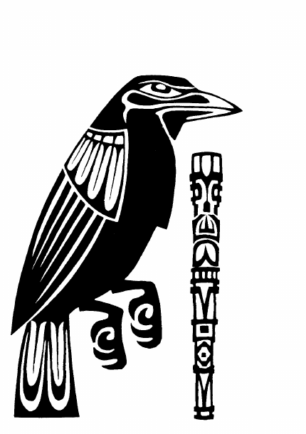

乌鸦 · Raven
乌鸦是改变形态的诡计者，被认为参与创造和改造世界。它能随意变形为乌鸦、狐狸、松鸦或月鸟，通常只在最后关头化为巨鸦战斗；它也被视为给人类带来食物与火的伟大供给者。想求它帮助，最有效的献礼是食物。
| 属性 | 数据 |
|---|---|
| AC / 移动 / HP | 0 / 24 英寸 / 400 |
| 攻击 | 3 次；3–18、3–18、3–30 |
| 特殊 | 令他者变形（−3 豁免）；自我变形 |
| 抗魔 / 阵营 / 位面 | 75% / 混乱善良 / 空气元素位面 |
| 牧师／德鲁伊 | 各 12 级 |
| 战士 / 魔法师 / 盗贼 | 巡林客 10 级 / 各 16 级 / 盗贼 14 级 |
